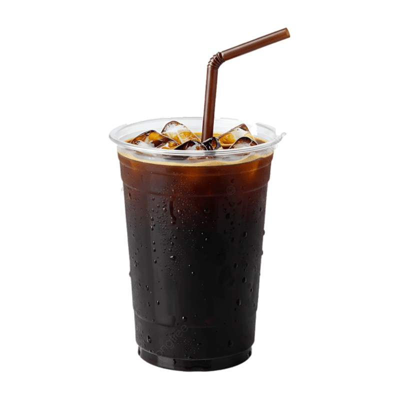
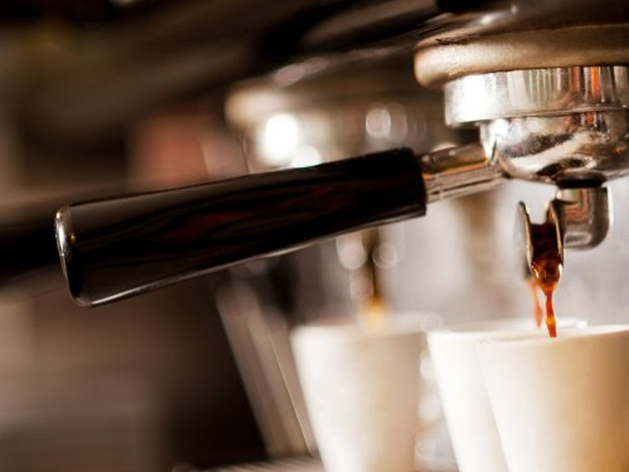
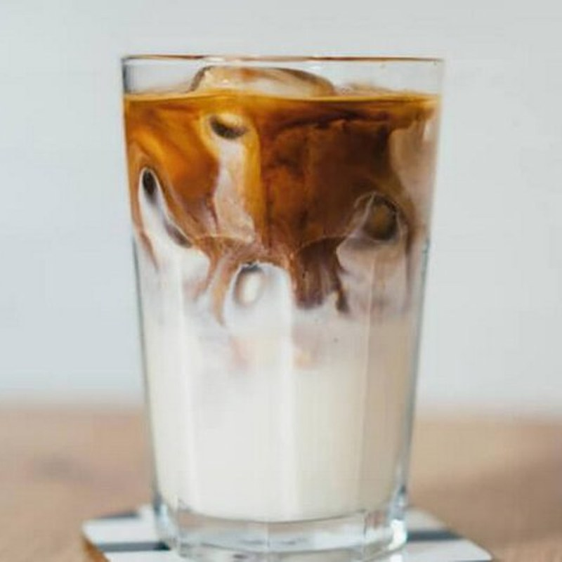
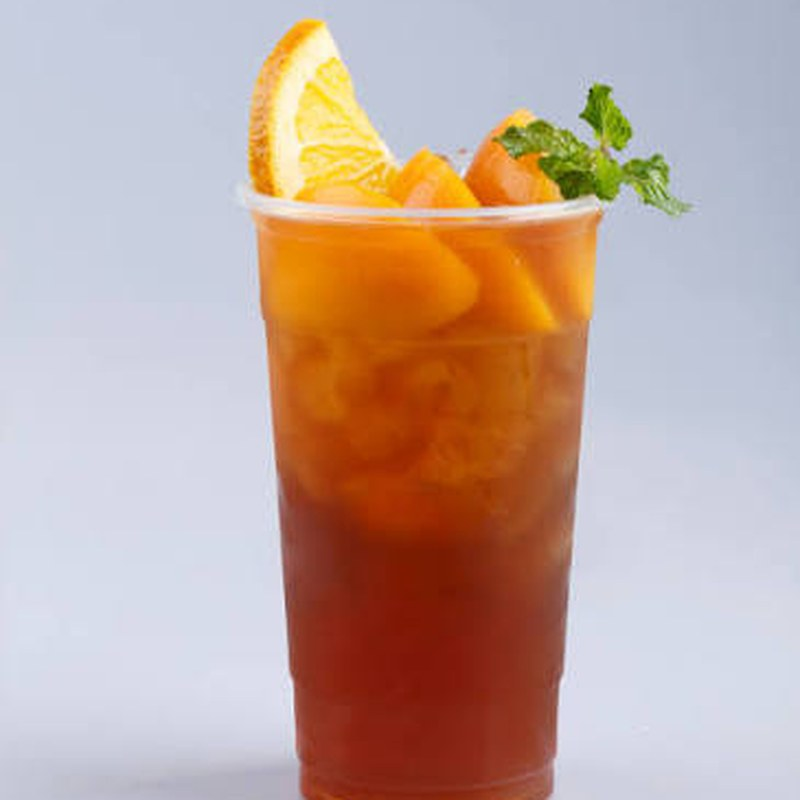

Cà phê đen đá
Robusta rang đậm, đắng gọn, hậu ngọt.
29.000đHạt cà phê rang mới mỗi ngày, bàn ghế gỗ và nhạc nhẹ. Ghé Tuýn Coffee để làm việc, hẹn bạn hoặc chỉ ngồi nghỉ một lát.
Xem thực đơn Tìm đường đến quán
Tuýn Coffee bắt đầu từ một quầy pha chế nhỏ với mong muốn đơn giản: mỗi ly cà phê đều được pha cẩn thận, đúng vị. Chúng tôi chọn hạt từ các nhà vườn Tây Nguyên và rang theo từng mẻ nhỏ.
Bạn sẽ thấy một không gian ấm, có chỗ ngồi yên tĩnh để làm việc và góc rộng cho nhóm bạn.
Câu chuyện của quánBa món khách quen của quán gọi mỗi ngày.

Robusta rang đậm, đắng gọn, hậu ngọt.
29.000đ
Nhiều sữa, ít cà phê, dịu và thơm.
39.000đ
Trà đen, đào miếng, cam và sả tươi.
45.000đÁp dụng cho mọi món cà phê, từ 14:00 đến 17:00.
Ba điều quán luôn giữ.
Rang theo mẻ nhỏ, dùng trong vòng hai tuần.
Ổ cắm, wifi mạnh và bàn rộng cho người làm việc.
Nhân viên nhớ món quen của bạn.